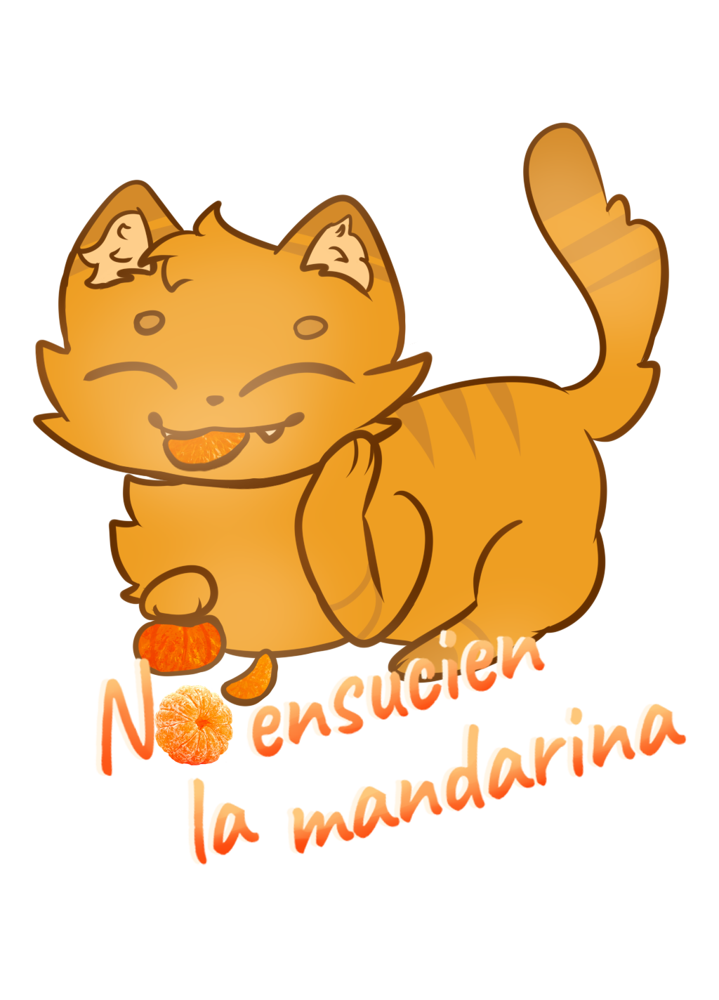
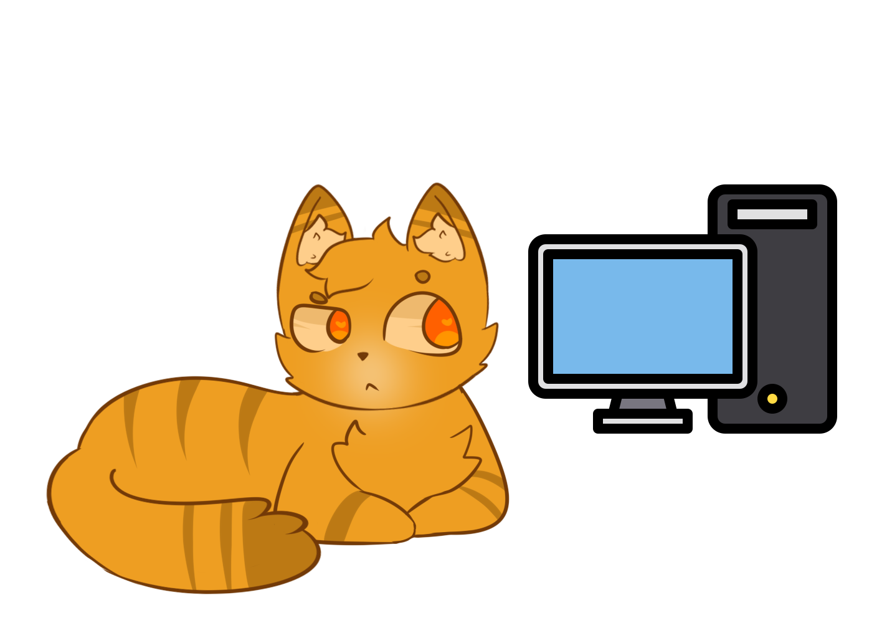
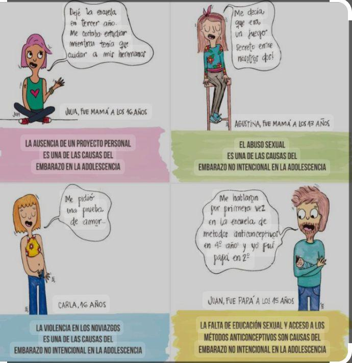
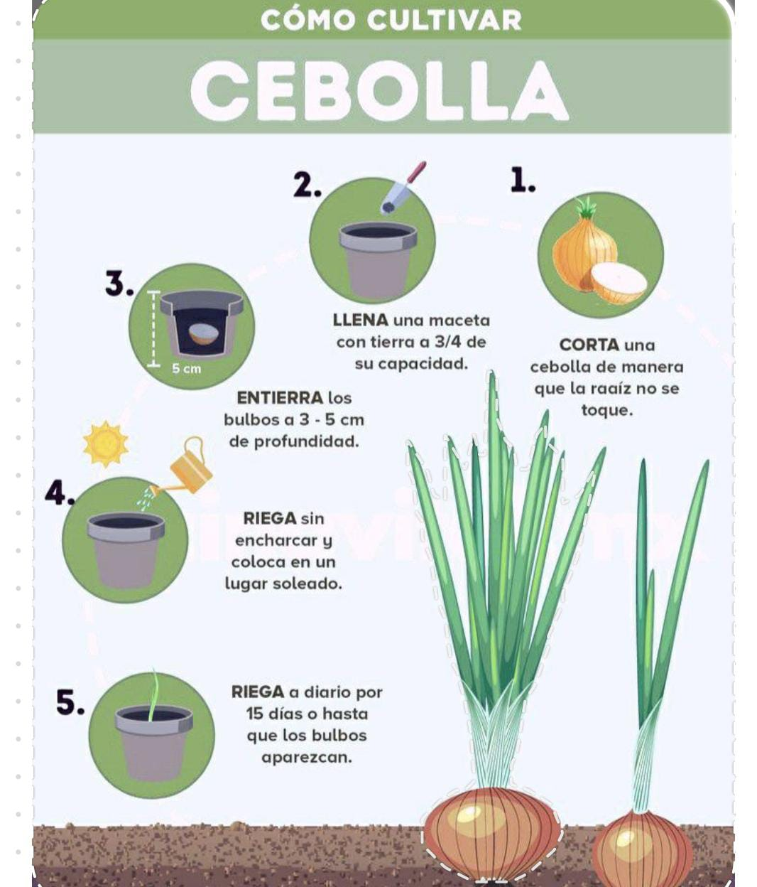

Buscamos aportar. Somos un medio de educacion estudiantil que propone incluir a la comunindad educativa como
futuros lectores y redactores.
Desde un mirado desde la comunicacion popular como nos enseña Mario Kaplun que intenta generar igualidad entre
los
integrantes de la comunidad educativa.
Los invitamos a formar parte de la edición número 1.

La falta de los recursos tecnológicos en la educación
En el mundo actual, la tecnología se ha convertido en una herramienta esencial para el desarrollo de múltiples
áreas de la vida cotidiana, incluida la educación. Sin embargo, muchas instituciones educativas enfrentan
desafíos significativos debido a la falta de acceso a herramientas tecnológicas, una problemática que afecta
directamente la calidad de la enseñanza y el aprendizaje. Esta entrevista aborda esta realidad desde la
perspectiva de la docente de informatica llamada M.Graciela Cori, quien comparte sus vivencias, estrategias y
reflexiones sobre la falta de recursos
tecnológicos en las escuelas.
¿En estos últimos años, qué problemáticas ocurren con la carencia de herramientas tecnológicas para educar
en la escuela?
Bueno, básicamente sucede que no pueden dar la parte práctica o teórica o el uso de cada
herramienta de acuerdo a la materia. En nuestro caso, en informática, no pueden ver el uso del dispositivo
electrónico, ya sea tablet, notebook o PC de escritorio.
¿Qué estrategias pedagógicas usas para afrontar la ausencia de recursos tecnológicos?.
Bien, parece contradictorio, pero justamente como recurso tecnológico se utiliza el
celular, por lo general, aunque algunas no cuentan con celular tampoco. Además, si no tenemos acceso a
internet, también es una traba, porque el internet también sería un recurso, pero si no, además de los
celulares, también se puede recurrir a la biblioteca.
¿Cómo afecta la falta de recursos a la educación de los alumnos?
Justamente, reiterando la primera respuesta, la falta de práctica y del conocimiento que
ellos pueden adquirir desde el dispositivo específicamente o del recurso que tengamos para la materia. Pero
justamente el no poder utilizarlo de forma física.
¿Por qué cree que el Estado decide no invertir en una política educativa que apoye el uso de recursos
tecnológicos?
Principalmente, y a modo personal, creo que no les interesa la educación y no aportan. No
invierten en la educación. No solo en la de adultos, sino en la media, en todos los niveles. Creo que toman
otras prioridades. Pero bueno, el objetivo tendría que ver con otras cosas, a mi criterio.
¿Qué propuesta de política pública educativa crees que es viable para erradicar esta problemática?
Bueno, justamente, volviendo a la pregunta anterior, sería invertir en educación, pero
invertir en lo mínimo o en lo que sobra no es suficiente. ¡Invertir realmente! Porque si queremos ver buenos
resultados, tenemos que invertir, empezando por la estructura, más allá de los recursos. A veces no se
cuenta con edificios adecuados. Pero las políticas deberían ser eso: invertir en la educación, pero de forma
real, no solo en palabras o carteles.
La entrevista con la docente Graciela Cori pone de manifiesto la realidad de muchas instituciones educativas que
enfrentan una escasez de recursos tecnológicos, un factor que limita gravemente la calidad de la enseñanza y el
aprendizaje. A pesar de los esfuerzos por adaptar estrategias pedagógicas con los pocos recursos disponibles,
como el uso de celulares o la biblioteca, la falta de herramientas específicas impide que los estudiantes
adquieran el conocimiento práctico que requiere la educación moderna, especialmente en áreas como la
informática.
Es evidente que la inversión en tecnología y en infraestructura educativa es crucial para mejorar la calidad
educativa.

Alan Gabriel Hernando
Tecnología e innovación
En cuanto a tecnología, contamos con dos centros culturales: uno ubicado en San Justo y otra
ubicada en el el
KM 32 conocido como CUDI
Técnico/a Universitario/a en Programación - 2 años - UTN
Las/os graduadas/os podrán
Analizar, diseñar e implementar programas informáticos.
Detectar y analizar problemas relacionados con el procesamiento de datos, brindando soluciones
efectivas.
Adquirir conocimientos para desarollar programas con lenguajes actualizados
Técnico/a en Producción de Videojuegos - 3 años - UNPAZ
El/la graduado/a podrá:
Integrar equipos dedicados al desarollo de proyectos juegos analogicos y/o videojuegos.
Producir documentación técnica y creativa para la creación de proyectos lúdicos.
Concebir propuestas centradas en la "experiencia de usuario" y colaborar en la producción de eventos.
Técnico/a Universitario/a en Diseño Industrial - 2 años y medio - UNAHUR
El/la técnico/a se especializará en:
El diseño de productos y piezas.
El prototipado por medio de tecnologías digitales de fabricación.
La identificación de productos a desarrollar y la administración de dispositivos y herramientas
digitales de diseño y fabricación digital, entre otras características.
Diplomatura en Gestión de TIC para
PYMES - 8 Meses - UBA
Incluye los fundamentos de administración sobre los cuales aplicar los sistemas de tecnología de la
información y destaca el uso de Internet para la comercialización.
Se aprenden aspectos de análisis financiero aplicables a las Pequeñas y Medianas Empresas (PYMES).
Alan Gabriel Hernando
Dengue en Argentina y la importancia del Cuidado
El dengue es una enfermedad viral transmitida por el mosquito Aedes aegypti, que se ha
convertido en un problema de salud pública en Argentina. En los últimos años, el país ha
experimentado un aumento significativo en los casos de dengue, especialmente en las
provincias del norte.
En 2024, Argentina ha registrado un aumento notable en los casos de dengue. Las
provincias más afectadas son Tucumán, Misiones, Formosa y Chaco.
Importancia del cuidado
Es fundamental tomar medidas preventivas para evitar la propagación del dengue,
especialmente en áreas con alta incidencia. Algunas recomendaciones clave son:
Eliminar los criaderos de mosquitos: Retira cualquier objeto que acumule agua en tu
hogar, como floreros, cubetas y neumáticos.
Usar repelentes: Aplica repelentes de insectos en piel y ropa.
Proteger tu hogar: Instala mosquiteras en ventanas y puertas.
Viste adecuadamente: Usa ropa larga y cerrada en áreas con alta incidencia.
Mantén limpio tu entorno: Realiza fumigaciones y eliminación de residuos
Nuevas tendencias: Mosquitos en otras estaciones
Este año, se ha observado un aumento en la presencia de mosquitos en otras estaciones,
no solo en verano. Esto se debe a factores climáticos y ambientales, como: Cambio
climático,Incremento en las lluvias y Temperaturas más cálidas
El dengue es una enfermedad grave que requiere atención inmediata. La prevención es
clave para evitar su propagación. Es importante tomar medidas preventivas y mantener un
entorno limpio y libre de criaderos de mosquitos.
Lucia Dominguez
La Matanza refuerza la campaña de prevención contra el dengue ante la falta de apoyo nacional
Ante la ausencia del Gobierno nacional, el Municipio de La Matanza, encabezado por Fernando Espinoza, refuerza
la campaña de prevención y concientización para combatir el dengue. Las acciones complementan el trabajo que se
realiza año tras año en el distrito para evitar la reproducción de los mosquitos y frenar su propagación, a
través de diferentes operativos y la incorporación de hábitos domiciliarios. Además, los hospitales Dr. Alberto
Balestrini, Dr. Diego Paroissien y Simplemente Evita serán sedes de la vacunación contra el dengue.
Ante la presencia de síntomas como fiebre, dolor de cabeza (generalmente retroocular), estado de desgano y
dolores musculares, similares a un cuadro gripal, se recomienda no automedicarse y consultar al médico, o
dirigirse al Centro de Salud más cercano. Para más información, pueden comunicarse a los teléfonos:
ESI es un tema fundamental en la formación de los jóvenes.
En Argentina, su implementación en escuelas primarias y secundarias ha generado un
impacto significativo en la concienciación sobre la sexualidad y los riesgos asociados.

Objetivos de la ESI
La ESI busca:
Promover la salud sexual y reproductiva.
Prevenir el embarazo adolescente y ETS.
Fomentar la igualdad de género y respeto mutuo.
Desarrollar habilidades para la toma de decisiones informadas.
En cuanto a su efectividad,Estudios han demostrado que la ESI
en escuelas:
Reduce el número de embarazos adolescentes.
Disminuye la incidencia de ETS.
Mejora la comprensión sobre la sexualidad y los derechos reproductivos.
En esta nota nos enfocaremos en el embarazo adolecente,sus desventajas y que es lo que
podemos hacer para prevenir y acompañar en estos casos.
Razones por las que una joven puede no estar lista para ser madre:
Madurez emocional: La adolescencia es un período de cambios emocionales
intensos, y las jóvenes pueden no
tener la estabilidad emocional necesaria para cuidar a un bebé.
Desarrollo físico:
El cuerpo de una adolescente aún está en desarrollo, y el embarazo puede afectar su
salud y bienestar.
Educación y futuro:
El embarazo adolescente puede interrumpir la educación y limitar las oportunidades
futuras de la joven.
Soporte económico: Las jóvenes pueden no tener los recursos económicos
necesarios para cuidar a un bebé.
Presión social:
La sociedad puede ejercer presión sobre la joven para que asuma responsabilidades que no
está preparada para enfrentar.
Consecuencias del embarazo adolescente:
Abandono escolar
Problemas de salud mental
Problemas de salud física
Dificultades económicas
Aislamiento social
Posibles soluciones son:
Educación sexual integral
Acceso a métodos anticonceptivos
Apoyo emocional y psicológico
Programas de prevención del embarazo adolescente
Apoyo económico y social para jóvenes madres
Es fundamental que trabajemos juntos para prevenir el embarazo adolescente y apoyar a
las jóvenes que se encuentran en esta situacion.
El embarazo adolescente es un desafío significativo. Es importante que los padres y
adultos:
Reconozcan los factores de riesgo (presión social, falta de información, etc.).
Estén atentos a los cambios en el comportamiento de sus hijos.
Ofrezcan apoyo emocional y acceso a recursos adecuados
Fomenten la educación y prevención como herramientas clave
La implementación efectiva de la ESI depende en gran medida de
la participación activa de
los padres y adultos. Es fundamental que:
Hablen abiertamente con sus hijos sobre la sexualidad y los riesgos
Estén informados sobre la ESI y su contenido
Apoyen y refuercen los valores y habilidades aprendidos en la escuela.
Establezcan límites claros y respeten la autonomía de los jóvenes.
Es hora de trabajar juntos para garantizar que los jóvenes tengan acceso a información
precisa y apoyo emocional. Los padres y adultos deben asumir un papel activo en la
educación sexual de los más jóvenes.
Para terminar, quiero dejar una breve pregunta ¿Qué acciones podemos tomar para apoyar
la ESI en nuestros seres queridos?
Lucia Dominguez
Migracion de escuela privadas a escuela pública
El día miércoles se le realizó una breve
entrevista a Andrés
director de CENS 475, donde se le consultó su opinión acerca de la migración de estudiantes en la actualidad.
Conviene subrayar que este no es el único establecimiento en el que ejerce la docencia. En base a las preguntas
realizadas, él aseguró que el incremento de la matrícula en las escuelas públicas se debe a la problemática
económica. Personalmente, le gustaría que este aumento se debiera a otras cuestiones, como que los padres deseen
realmente enviar a sus hijos a estos establecimientos. Sin embargo, está en cada familia decidir cómo y dónde
estudiarán sus hijos. Así mismo, reafirma que el aumento se debe principalmente a la problemática
socioeconómica,
ya que, si no fuera por esta, los padres creen que la educación privada es mejor. A lo que refutó este argumento
y sostuvo que la única diferencia entre estas dos clases de instituciones es que la escuela privada garantiza la
realización de clases todos los días, pero en cuanto a la educación en ambos tipos de establecimientos, es
igual. Hay un diseño curricular que, tanto en primaria como en secundaria, es el mismo en las escuelas públicas
y en los establecimientos privados.
Lucia Dominguez
El Ciberbullying: El Acoso Digital tiene consecuencias Reales
El ciberbullying es una forma de acoso o intimidación que ocurre a través del internet en las redes sociales,
mensajes de texto, correos electrónicos o plataformas en línea. Implica el uso de tecnología para hostigar,
humillar, amenazar o difundir información falsa o dañina sobre una persona. Este tipo de acoso puede ser
constante, anónimo y más difícil de controlar, ya que puede suceder a cualquier hora y llegar a un gran número
de personas. El ciberbullying puede afectar profundamente la salud emocional y mental de la víctima haciendo que
la
víctima empiece a tener pensamientos negativos o autodestructivos.
Si tú o alguien más está siendo víctima de ciberbullying, hay varias acciones que se pueden tomar:
Documentar el acoso
Capturas de pantallas
Guarda pruebas de los mensajes, publicaciones, correos electrónicos u otros contenidos relacionados con
el acoso. Estas evidencias pueden ser útiles si decides tomar medidas legales.
Guardar evidencia en carpetas
Si es posible, guarda los textos, correos o imágenes en los que se da el acoso.
Reportar el acoso a las plataformas
Redes sociales
La mayoría de las redes sociales, como Facebook, Instagram, Twitter(X), YouTube, etc., tienen mecanismos
para reportar contenido abusivo o intimidante. Usa esas herramientas para denunciar los mensajes o
publicaciones ofensivas. Pero lastimosamente estás funciones fallan es muchas ocasiones porque los
monitorea un bot.
Servicios de mensajería
Muchas aplicaciones de mensajería (WhatsApp, Telegram, etc.) también permiten reportar usuarios o
bloquearlos.
Bloquear al agresor
Bloquear a la persona
en las plataformas donde esté ocurriendo el acoso es una forma de evitar más contacto y daño. Si está
persona vuelve con una multicuenta (otra cuenta) es mejor tener guardado esto para ir a tomar acciones
legales.
Servicios de mensajería
Muchas aplicaciones de mensajería (WhatsApp, Telegram, etc.) también permiten reportar usuarios o
bloquearlos.
Buscar apoyo emocional
Habla con alguien en quien confíes, como un amigo cercano, un miembro de la familia o un psicólogo. El
apoyo emocional es crucial en situaciones de acoso.
Existen también líneas de ayuda y organizaciones especializadas que pueden ofrecer apoyo en estos casos.
Consultar con un profesional o acudir a autoridades
Si el acoso es grave o involucra amenazas, es importante buscar ayuda profesional (como un psicólogo) o
acudir a las autoridades locales (como la policía).
En muchos países, el ciberbullying es un delito, y se pueden tomar medidas legales para proteger a la
víctima.
Educar y concienciar sobre el tema
Promover la educación sobre los efectos del ciberbullying y fomentar un entorno digital respetuoso puede
ayudar a prevenir futuros incidentes.
Es importante recordar que nadie merece ser acosado, y siempre hay formas de buscar ayuda y apoyo.
Mí recomendación sería que tengas mucho cuidado en donde te metes en las redes sociales, no te expongas
demasiado, ten cuidado con mostrar datos personales o algún punto de vulnerabilidad ante estos bullies/trolls
del
internet.
Thiago Badia
Peligros en el internet
El internet es una herramienta que nos brinda muchas posibilidades y beneficios, pero también presenta peligros
que es importante que debemos tener en cuenta. Veremos algunos de los riesgos que debemos tener en cuenta al
usar Internet y cómo podemos protegernos de ellos. Por eso les traigo una entrevista a una persona que tiene
conocimiento dentro del internet.
¿Qué clases de cuidados deberíamos tener en el internet?
Cuidados referentemente con los datos personales ya que cuando conocemos a alguien por
ahí no tenemos la certeza de que sea esa persona, se ultiliza algo que algunas personas le llaman sings que
son fotos en las que la persona escribe en un papel el nombre de la otra así se corrobora que es real,
además que la suplantación de identidad en el anonimato del internet se permite eso, ademas que pueden
convencerte para obtener tus datos bancarios o de donde vivis lo cual es muy peligroso, ya sea hasta
haciéndose pasar por servicio técnico.
¿Alguna vez te encontraste con un grupo peligroso? Y si es así ¿Qué hiciste?
Logré toparme en el pasado con un grupo que buscaba a gente que difundiera pornografia
infantil para tumbar esos grupos y por lo que se hasta a algunos que compartían ese contenido eran los
autores y a algunos de esos este mismo grupo llegaba a matarlos, en mi caso yo lo que hacía con ellos era
ayudarlos a encontrar esos grupos y a quienes los organizaban.
¿Qué piensas de la falta de regulación y seguridad que hay en las redes?
Que es muy peligroso en especial en nuestro pais ya que la regulación cibernética es casi
nula en este lado donde se da por hecho que no puede hacer ningún mal verdadero permitiendo hasta un tráfico
ilegal (de imagenes o videos) en los mismos en donde quedan impunes generalmente.
¿Cómo puede el estado proteger a los usuarios del internet?
Generando regulaciones de uso y hasta de edad creo que sería conveniente, para así luego
concientizar al respecto de sus peligros del mismo, como evitarlos y que males puede hacer a los
niños.
En esta entrevista, el entrevistado destaca los peligros del internet, especialmente en lo que respecta a la
protección de los datos personales y el robo de identidad. Subraya la importancia de verificar la autenticidad
de las personas en línea, utilizando herramientas como los "sings". Además, comparte su experiencia enfrentando
grupos peligrosos, como los que se dedican a la distribución de pornografía infantil, en los que colaboró para
localizar y denunciar a los responsables. En relación con las redes sociales, alerta sobre riesgos como el
grooming y el fraude, problemas que se agravan debido a la falta de regulación. El entrevistado cree que la
falta de leyes claras en su país facilita actividades ilegales. Como solución, propone que el gobierno
implemente regulaciones más estrictas, ponga límites de edad y promueva la educación sobre los peligros en
línea, especialmente para los niños.
Thiago badia
Cultivando Conciencia: Taller de Huerta Casera
En el CENS Nº478, los directivos y profesores dictaron un taller sobre la terminación y cuidados de una huerta
casera para los alumnos de 2º y 3º año del turno nocturno. En los tiempos que vivimos actualmente en el país,
estas iniciativas ayudan a concientizar sobre la importancia de generar nuestros propios alimentos. En este
caso, nos enseñaron a cosechar cebolla y, además, cómo realizar el seguimiento de las plantas. En nuestro
huerto, algunas cebollas siguen en proceso de crecimiento.
Por su parte, los alumnos de 2º año crearon un código QR que explica qué verduras o frutas se pueden plantar en
cada estación del año.
Esto ayudó a fomentar la conciencia sobre la autosustentabilidad y la importancia de generar nuestros propios
alimentos, especialmente en el contexto económico y social actual del país.

Veronica Romina Filpo
El club atletico River Plate
Goleo 3 a 0 a Barracas Central y no les pierde la pisada a los lideres en liga
profesional
El equipo de Marcelo Gallardo tuvo una rafaga letal en la segunda y se llevó un
gran triunfo ante el guapo
En los primeros minutos de la segunda etapa la actitud fue la misma del primer tiempo, pero seguia sin abrir
el marcador
Hasta que Gallardo decidio meter 3 variantes juntas; Franco Mastantuoso, Pity
Martines y Miguel Borja que fueron
la clave del partido y la victoria
Proximamente
proximo River Plate se
disputara ante Independiente de Rivadavia y viajara a Mendoza a darlo todo, luego de este encuentro el Millonario
debera enfrentar a San Lorenzo en el Monumental por
la fecha de la LPF a Estudiantes en uno por la jornada 25 a Rosario Central en el Liberti por la ante ultima
fecha y a rancing en el cilindro para cerrar la fecha en la liga profesional
Lautaro Cobo
Un intento de asalto en González Catán
Una policia se enfrento a disparos con delicuentes. La oficial actuo en legitima defenza en el hecho que fue
abordada por el delicuente que la superaban numericamente y despuestos a disparar, lo cual la tomaron por
sorpresa, y se produjo el enfrentamiento cumplio las leyes, y no los disparo por la espalda al tratar de escapar